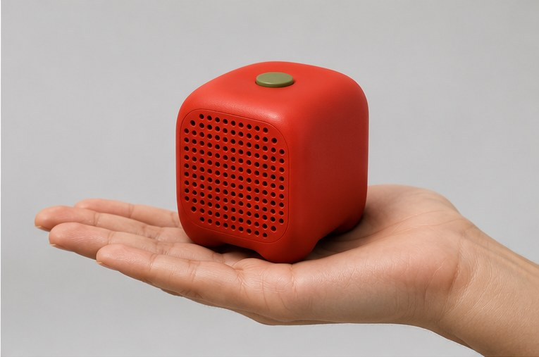
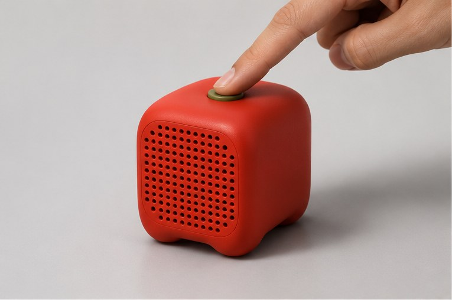
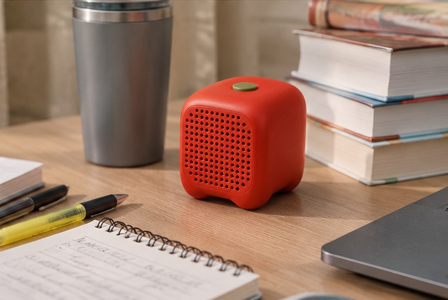

Three randomly generated words, and where they led.
cartography · atlas · territory · navigation · route · coordinates · journey timeline · sequence · structure · orientation · layout · mental model
lengthen · stretch prolong · expand · enlarge · amplify · augment · reach · continue · broaden · sustain · intensify
wide-angle · 360° · bird's-eye · overview · immersive · simultaneous · peripheral · horizon · perspective big picture
Making the passage and structure of time more perceptible
Nothing interrupts you, you just never felt the time go. People with ADHD call this time blindness, and most students know a milder version of it. A friend of mine lives with the full version, and watching it up close was frustrating for both of us.
Problem statement
How might we help students become more aware of time passing while they're absorbed in their work, so they notice drift before it costs them?
Deficits show up across every kind of timing task.
Marx et al., 2021, meta-analysis of 55 studies, JAACAPPleasant music makes time feel shorter, and tempo shifts it most. Tested over seconds, not hours.
Droit-Volet et al., 2013, Frontiers in PsychologyThe brain handles tempo, metre and pattern as separate parts of rhythm.
Thaut, Trimarchi & Parsons, 2014, Brain SciencesThey also lean towards more stimulating music than their peers.
Lachance, Pelland-Goulet & Gosselin, 2024, Frontiers in PsychologyThe effect depends on the task, the music and the listener.
Cheah et al., 2022, systematic review, Brain SciencesNotifications can be delivered through subtle changes to music people are already listening to.
Muranaka, Al-Sada & Nakajima, 2021, ICADTime is felt, not just read. Music is already in the room, and it can carry information. How much it helps varies, so the design has to stay personal.
A wearable timepiece co-designed with students with ADHD. A visual countdown plus gentle vibration.
Generated soundscapes for focus and sleep that adapt to time of day and context.
A red disc that shrinks as time runs out.
The open space: an object that doesn't just tell you, but lets you feel how far through a session you are, using sound.
A number says how much is left. A sensory cue can make the progress itself noticeable.
Use the music students already choose, instead of adding another screen.
Tempo and texture can show progress and urgency long before the end.
Design direction
Time as a piece of music that changes as the session runs out.
Noticed without asking for attention.
The same musical language every session.
Your music, and you control how strong the cues are.
Your playlist, turned into a clock you can hear, and over time, one you can sense.
A speaker cube for studying. Set it with a few gestures, put your phone away, and work.


Why a tomato? The name, the colour and the kitchen words (Prep, Simmer, Boil, Plate) come from the Pomodoro Technique, named after a tomato-shaped kitchen timer.
First 10%. Your favourite songs. The pulse starts slow.
The long middle. The pulse holds steady under the music, easy to ignore.
Last 25%. Faster tracks, a faster pulse, and a tick.
The closing track and the pulse resolve on time.
Pick a jar: a few seed songs or a playlist. tomatone finds similar tracks and orders them by tempo, so the last song ends on your deadline. Songs are never altered.
A quiet beat runs under the music all session. It's easy to tune out, but it's the same every time, so you start to pick it up. It gets faster, never louder.Speed is the strongest urgency cue in sound: Hellier, Edworthy & Dennis, 1993
In the last stretch, a soft woody tick joins the pulse on the off-beat. It's the clearest sign the end is near.
Too much, or too subtle? Tilt the cube left or right to change the heat. tomatone remembers for next time.
David Eagleman's work shows people can learn to read information through an unfamiliar sense, if the signal is consistent. Tomatone bets the same is true of a musical language for time. That's a hypothesis to test, not a promise.

The music changes alongside a session of known length.
Certain tempos start to mean "nearly done."
A better sense of time, maybe even without the cube. The Notebook's guessing game measures this.
Next: a two-week study with five students tracking their guesses, and a partnership with an adaptive music engine so the music itself can change tempo.
Cheah, Wong, Spitzer & Coutinho (2022). Background music and cognitive task performance: a systematic review. Brain Sciences. Link
Droit-Volet, Ramos, Bueno & Bigand (2013). Music, emotion, and time perception. Frontiers in Psychology.
Hellier, Edworthy & Dennis (1993). Improving auditory warning design. Human Factors 35(4).
Lachance, Pelland-Goulet & Gosselin (2024). Listening habits and subjective effects of background music in young adults with and without ADHD. Frontiers in Psychology. Link
Marx, Cortese, Koelch & Hacker (2021). Meta-analysis: altered perceptual timing abilities in ADHD. JAACAP. Link
Muranaka, Al-Sada & Nakajima (2021). Proceedings of the 26th International Conference on Auditory Display (ICAD 2021). Link
Thaut, Trimarchi & Parsons (2014). Human brain basis of musical rhythm perception. Brain Sciences.
Takt. KTH, CHI 2016 extended abstract. Link
Endel. Generated adaptive soundscapes. endel.io
Time Timer. Visual countdown timer. timetimer.com
David Eagleman. Sensory substitution.
Use the arrows or your arrow keys